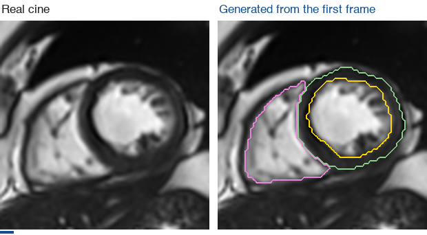
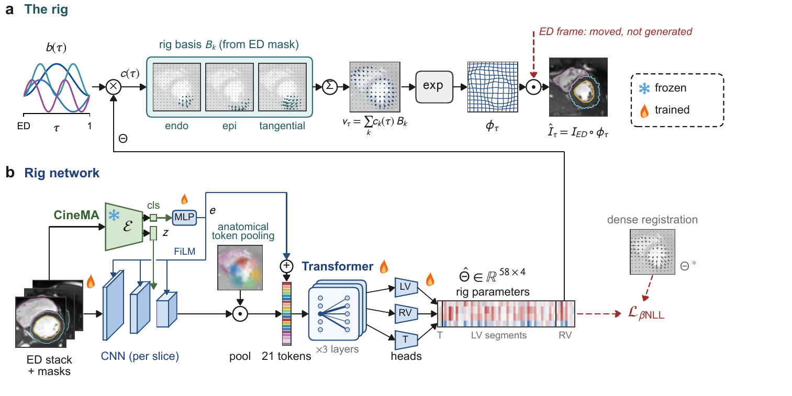
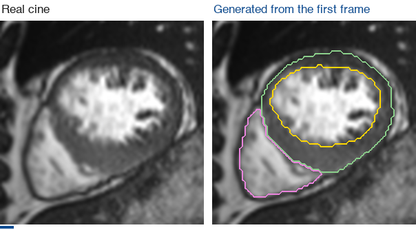

An Anatomical Rig for Predicting Cardiac Motion from a Single Cine MRI Frame
A cine MRI films a slice of the heart over one heartbeat. CardioRig takes the first frame of such a film and predicts the rest of the beat. It describes the motion with 232 numbers, and each number belongs to a named motion of one part of the heart.

Cardiologists describe the motion of the heart segment by segment. Methods that predict a heartbeat from one frame output a dense field, with one arrow per pixel and no link to the segments. CardioRig describes the same motion with 232 parameters. Each parameter belongs to a named motion, such as the inward motion of one wall segment. A fixed formula turns the parameters into a velocity field, and the velocity field moves the first frame. A neural network predicts the parameters from the first frame.
On the ACDC test set, the network is more accurate than our reimplementations of two published methods, and it is within 0.01 Dice of our own network that predicts a dense field. These results hold without retraining on M&Ms, a dataset from four scanner vendors.
A generated frame is the result of a chain of five steps. The sections below go through the chain from its end to its start, because the last steps are the easiest to picture. Every figure computes its images in your browser, on one slice of one patient, so you can change the inputs and see what each formula does.
The method does not paint new pictures of the heart. It computes a deformation $\phi_\tau$, a rule that says for every pixel $x$ of the new frame which point of the first frame it shows. The generated frame at phase $\tau$ is
Read the formula from the inside out: take a pixel $x$, look up the point $\phi_\tau(x)$ in the first frame $I_\mathrm{ED}$, and copy its brightness. When that point falls between pixels, the four nearest pixels are averaged. Since every brightness comes from the first frame, a generated frame only contains anatomy that the first frame shows.
Try it. Move the pointer over the generated frame. The orange circle marks a pixel of the generated frame, and the circle on the left marks the point of the first frame that it copies. The yellow arrows show how far the tissue has moved since the first frame.
The rig does not output the deformation itself. It outputs a velocity field $v$: one arrow per pixel that says in which direction the tissue at that place moves, and how fast. The deformation is what you get by following the arrows for one unit of time. Mathematicians write this as an exponential,
The simplest way to follow the arrows is one large step, $x \mapsto x + v(x)$. With strong motion this fails: two neighbouring points can jump past each other, and the grid folds over itself. Real tissue cannot do that. With many small steps the points move a little, read the arrow at their new place, and move again, and a smooth field then never folds.
Many small steps sound expensive, but doubling makes them cheap. Start with one small step of size $1/2^K$. Applying it twice gives a step of twice the size, and applying that result twice doubles it again:
After $K$ doublings the step has size 1. We use $K = 7$, which equals 128 small steps at the cost of 7. The method is called scaling and squaring.
Try it. The field on the left pulls a square grid towards its centre and turns it. With $K = 0$ the grid takes one large step and folds in the red area. Raise $K$ and the fold disappears.
To give a velocity field anatomical meaning, the rig first measures every pixel in coordinates of the patient's own heart. The origin is the centre of the LV cavity. A pixel is located by its distance $r$ from that centre and its angle $\theta$, where $\theta = 0$ points towards the RV. Along each direction, the outlines of the first frame give the radius of the inner boundary of the wall, $r_\mathrm{in}(\theta)$, and of the outer boundary, $r_\mathrm{out}(\theta)$. The depth of a pixel through the wall is
so $d = 0$ on the inner boundary and $d = 1$ on the outer one. The wall is then cut into segments by angle: six in a slice near the base or the middle of the heart and four near the tip, 16 in total. These are the segments that cardiologists use in their reports.
Try it. Move the pointer over the image to read the coordinates of any point. The coloured band shows the six segments of this slice.
For every wall segment $s$, the rig has three fixed velocity fields, called basis fields. One moves the inner boundary towards or away from the centre, one does the same for the outer boundary, and one slides the wall along its own direction:
Each field is an arrow direction multiplied by a few factors between 0 and 1 that say where the field is active. The direction $e_r$ points along the radius and $e_\theta$ points around the ring. The factor $h_s$ selects the segment: it is 1 at the centre of segment $s$ and falls to 0 at the centres of its two neighbours, so neighbouring fields blend without a jump. The factor $q$ brings the field to zero at the centre of the cavity, and $g$ makes it fade outside the heart. The depth $d$ ties a field to one boundary: $1 - d$ is 1 on the inner boundary and 0 on the outer one.
The RV has four sectors with two motions each, and two more fields shift the whole heart in the image. This gives $16 \times 3 + 4 \times 2 + 2 = 58$ motions for a patient. All of them are computed from the outlines of the first frame, and nothing in them is learned.
Try it. Pick a segment and a motion. The arrows show how tissue moves when the parameter of that motion is positive.
A basis field says where and in which direction tissue moves. How much it moves at each moment of the beat is given by a curve $c(\tau)$, built from four fixed curves:
The four weights $\theta_1, \dots, \theta_4$ are the parameters of the motion. All four curves are zero at $\tau = 0$ and return to zero at $\tau = 1$, so whatever the weights, the heart starts in the first frame and comes back to it at the end of the beat. The first curve rises once and falls once, which is one contraction per beat. The second is positive in the first half of the beat and negative in the second, so it moves the peak earlier or later. The last two repeat twice per beat and change the shape of the curve, for example a fast contraction followed by a slower filling.
Try it. Start from "One contraction" and raise $\theta_2$: the heart contracts earlier in the beat. A negative $\theta_1$ makes the wall move outwards.
The velocity field at phase $\tau$ is the sum of all 58 basis fields, each multiplied by the value of its own curve:
With four weights per motion, $58 \times 4 = 232$ parameters describe the motion of all slices over the whole beat. A dense field needs two numbers per pixel in every slice and frame, more than 100,000 for a single frame of a stack. The steps of sections 2 and 1 then turn $v_\tau$ into a deformation and a generated frame.
Try it. Move the pointer over a column to see which motion it drives. Red is a positive weight and blue a negative one. Faded columns belong to slices nearer the base or the tip of the heart. The last slider multiplies the parameters of one segment: the motion changes in that segment and in the adjacent halves of its neighbours, and the rest of the heart stays as it was.
What remains is to find the 232 parameters when only the first frame is known. A neural network does this. It reads the slices of the first frame with their outlines and computes image features. The features are then averaged over 21 regions: one per wall segment, one per RV sector and one for the whole heart. Each region gives one token, a list of numbers that summarises what the image shows there. Three transformer layers let the tokens exchange information, and small output layers turn each token into the parameters of its own motions.
For training, we need the parameters of real heartbeats. We obtain them from complete cines of 100 patients: a registration method measures the motion between the first frame and every other frame, and the rig is fitted to that motion. The network learns to predict the fitted parameters from the first frame.

We score a prediction at end-systole, where the datasets provide reference outlines. The outlines of the first frame are moved with the predicted motion and compared with the reference by the Dice overlap, which is 1 for a perfect match.
| Predicted from the first frame | ACDC test 50 patients | M&Ms 345 subjects, no retraining |
|---|---|---|
| No motion | 0.580 | 0.526 |
| Krebs et al. (our reimplementation) | 0.646 | 0.609 |
| PhaseFlow (our reimplementation) | 0.695 | 0.658 |
| Dense-field model (ours) | 0.722 | 0.683 |
| CardioRig (ours) | 0.715 | 0.680 |
CardioRig is more accurate than our reimplementations of the two published methods, by 0.020 and 0.069 Dice on ACDC. It is within 0.01 Dice of our dense-field model, a network that predicts one arrow per pixel without the restriction of the rig. The order of the methods is the same on M&Ms, whose images come from four scanner vendors that the networks did not see in training.
The rig itself describes motion with little loss. Fitted to simulated hearts with known motion (STRAUS), it reproduces that motion to about 1 mm. The parameters also carry diagnostic information: a linear classifier on them assigns 77% of held-out patients to the correct one of five disease groups, where chance is 20%.

The rig models motion within the slice plane only. It is built from the outlines of the first frame, for which we used the reference outlines of the datasets. All predictors that we tested, including ours, contract the LV less than the real heart does: CardioRig recovers 72% of the change in LV area on ACDC.
@misc{zhu2026cardiorig,
title = {An Anatomical Rig for Predicting Cardiac Motion from a Single Cine MRI Frame},
author = {Roger Zhu},
year = {2026}
}